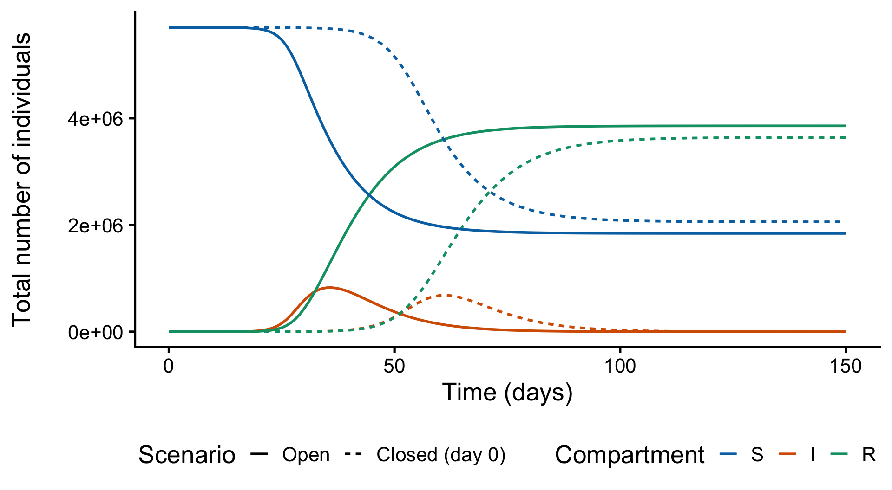

Goal: extend the SIR model to two age groups — children and adults — and use it to compare epidemic trajectories with schools open vs closed.
3.1 The model
The population is split into children (\(c\)) with \(N_c = 700\,000\) and adults (\(a\)) with \(N_a = 5\,000\,000\). \(\beta_{ij}\) is the per-capita rate at which one infectious person in group \(j\) infects a susceptible in group \(i\), so the force of infection on each group mixes infectious people from both groups:
with \(\frac{dR_c}{dt} = \gamma I_c\), \(\frac{dR_a}{dt} = \gamma I_a\) and \(\gamma = 1/5\) per day (mean infectious period of 5 days) in both groups.
At the start of the epidemic one infectious child infects \((\beta_{cc} S_c + \beta_{ca} S_a)/\gamma\) people and one infectious adult infects \((\beta_{ac} S_c + \beta_{aa} S_a)/\gamma\). Closing schools mostly cuts child-to-child mixing (\(\beta_{cc}\)); the other rates barely move:
mixing rate
schools open
schools closed
\(\beta_{cc}\)
0.000 000 800
0.000 000 300
\(\beta_{ca}\)
0.000 000 060
0.000 000 066
\(\beta_{ac}\)
0.000 000 200
0.000 000 220
\(\beta_{aa}\)
0.000 000 050
0.000 000 045
1 child infects
4.3
2.7
1 adult infects
1.95
1.90
3.2 odin implementation
One generator covers every scenario: each mixing rate switches from its “schools open” value to its “schools closed” value at close_time. Setting close_time = 0 closes schools from day 0; setting it beyond the simulation horizon keeps them open. Two extra compartments inc_c and inc_a accumulate new infections so daily incidence can be recovered by differencing.
Daily incidence by age group, schools open vs closed from day 0
And the overall S/I/R trajectories:
df_day0 %>%mutate(S = S_c + S_a, I = I_c + I_a, R = R_c + R_a) %>%pivot_longer(c(S, I, R), names_to ="compartment", values_to ="people") %>%ggplot(aes(x = t, y = people, colour = compartment, linetype = scenario)) +geom_line(linewidth =1) +scale_colour_manual(values =c("S"="#0072B2", "I"="#D55E00","R"="#009E73"),limits =c("S", "I", "R")) +xlab("Time (days)") +ylab("Total number of individuals\n") +labs(colour ="Compartment", linetype ="Scenario") +theme_classic(base_size =20) +theme(legend.position ="bottom")

Total S, I, R, schools open vs closed from day 0
Closing schools lowers and delays the peak. The effect is strongest in children — exactly where \(\beta_{cc}\) is cut from \(8\times10^{-7}\) to \(3\times10^{-7}\) — but adults benefit too, because fewer infected children means fewer infections spilling over through \(\beta_{ca}\).
3.4 Part 2: closing schools mid-epidemic
In practice interventions start partway through. Here schools close on day 15, compared with never closing:
Incidence drops immediately after day 15, and because closure happens early in the growth phase, most infections are averted — the trajectory is much closer to closing from day 0 than to never closing. Timing matters as much as the size of the mixing change.
Source Code
---knitr: opts_chunk: fig-width: 10 fig-asp: 0.55---# Interventions: school closure {#sec-school-closure}**Goal:** extend the SIR model to two age groups — children and adults — anduse it to compare epidemic trajectories with schools open vs closed.## The modelThe population is split into children ($c$) with $N_c = 700\,000$ and adults($a$) with $N_a = 5\,000\,000$. $\beta_{ij}$ is the per-capita rate at whichone infectious person in group $j$ infects a susceptible in group $i$, so theforce of infection on each group mixes infectious people from both groups:$$\frac{dS_c}{dt} = -(\beta_{cc} I_c + \beta_{ac} I_a)\, S_c, \qquad\frac{dI_c}{dt} = (\beta_{cc} I_c + \beta_{ac} I_a)\, S_c - \gamma I_c,$$$$\frac{dS_a}{dt} = -(\beta_{ca} I_c + \beta_{aa} I_a)\, S_a, \qquad\frac{dI_a}{dt} = (\beta_{ca} I_c + \beta_{aa} I_a)\, S_a - \gamma I_a,$$with $\frac{dR_c}{dt} = \gamma I_c$, $\frac{dR_a}{dt} = \gamma I_a$ and$\gamma = 1/5$ per day (mean infectious period of 5 days) in both groups.At the start of the epidemic one infectious child infects$(\beta_{cc} S_c + \beta_{ca} S_a)/\gamma$ people and one infectious adultinfects $(\beta_{ac} S_c + \beta_{aa} S_a)/\gamma$. Closing schools mostlycuts child-to-child mixing ($\beta_{cc}$); the other rates barely move:| mixing rate | schools open | schools closed ||----------------|-------------:|---------------:|| $\beta_{cc}$ | 0.000 000 800 | 0.000 000 300 || $\beta_{ca}$ | 0.000 000 060 | 0.000 000 066 || $\beta_{ac}$ | 0.000 000 200 | 0.000 000 220 || $\beta_{aa}$ | 0.000 000 050 | 0.000 000 045 || 1 child infects| 4.3 | 2.7 || 1 adult infects| 1.95 | 1.90 |## odin implementationOne generator covers every scenario: each mixing rate switches from its"schools open" value to its "schools closed" value at `close_time`. Setting`close_time = 0` closes schools from day 0; setting it beyond the simulationhorizon keeps them open. Two extra compartments `inc_c` and `inc_a` accumulatenew infections so daily incidence can be recovered by differencing.```{r}library(odin)library(tidyverse)times <-seq(0, 150, by =1) # daily output over 150 dayssir_age <- odin::odin({deriv(S_c) <--(beta_cc * I_c + beta_ac * I_a) * S_cderiv(I_c) <- (beta_cc * I_c + beta_ac * I_a) * S_c - gamma * I_cderiv(R_c) <- gamma * I_cderiv(S_a) <--(beta_ca * I_c + beta_aa * I_a) * S_aderiv(I_a) <- (beta_ca * I_c + beta_aa * I_a) * S_a - gamma * I_aderiv(R_a) <- gamma * I_a# cumulative incidence (differenced below to get daily cases)deriv(inc_c) <- (beta_cc * I_c + beta_ac * I_a) * S_cderiv(inc_a) <- (beta_ca * I_c + beta_aa * I_a) * S_a# schools open until close_time, closed afterwards beta_cc <-if (t < close_time) beta_cc_open else beta_cc_closed beta_ca <-if (t < close_time) beta_ca_open else beta_ca_closed beta_ac <-if (t < close_time) beta_ac_open else beta_ac_closed beta_aa <-if (t < close_time) beta_aa_open else beta_aa_closedinitial(S_c) <- N_c - I_iniinitial(I_c) <- I_iniinitial(R_c) <-0initial(S_a) <- N_a - I_iniinitial(I_a) <- I_iniinitial(R_a) <-0initial(inc_c) <-0initial(inc_a) <-0 N_c <-user(700000) N_a <-user(5000000) I_ini <-user(1) # one infectious seed in each age group gamma <-user(0.2) # infectious period 5 days# mixing rates, schools open / closed beta_cc_open <-user(8e-7) beta_ca_open <-user(6e-8) beta_ac_open <-user(2e-7) beta_aa_open <-user(5e-8) beta_cc_closed <-user(3e-7) beta_ca_closed <-user(6.6e-8) beta_ac_closed <-user(2.2e-7) beta_aa_closed <-user(4.5e-8) close_time <-user(1e6) # default: schools never close})```A small helper runs one scenario and labels the output:```{r}run_scenario <-function(close_time, label) { sir_age$new(close_time = close_time)$run(times) %>%as.data.frame() %>%mutate(scenario = label)}```## Part 1: schools closed from day 0Compare the epidemic with schools open throughout against one where schoolsare closed from the very start:```{r}df_day0 <-bind_rows(run_scenario(1e6, "Open"),run_scenario(0, "Closed (day 0)")) %>%mutate(scenario =factor(scenario,levels =c("Open", "Closed (day 0)")))```Daily new infections in each age group — the view where school closureactually bites:```{r}#| fig-cap: "Daily incidence by age group, schools open vs closed from day 0"df_day0 %>%group_by(scenario) %>%mutate(new_c =c(NA, diff(inc_c)), new_a =c(NA, diff(inc_a))) %>%ungroup() %>%filter(t >0) %>%pivot_longer(c(new_c, new_a), names_to ="group", values_to ="cases") %>%mutate(group =recode(group, new_c ="Children", new_a ="Adults")) %>%ggplot(aes(x = t, y = cases, colour = group, linetype = scenario)) +geom_line(linewidth =1) +xlab("Time (days)") +ylab("Daily new infections\n") +scale_colour_manual(values =c("Children"="#E69F00", "Adults"="#56B4E9")) +labs(colour ="Age group", linetype ="Scenario") +theme_classic(base_size =20) +theme(legend.position ="bottom")```And the overall S/I/R trajectories:```{r}#| fig-cap: "Total S, I, R, schools open vs closed from day 0"df_day0 %>%mutate(S = S_c + S_a, I = I_c + I_a, R = R_c + R_a) %>%pivot_longer(c(S, I, R), names_to ="compartment", values_to ="people") %>%ggplot(aes(x = t, y = people, colour = compartment, linetype = scenario)) +geom_line(linewidth =1) +scale_colour_manual(values =c("S"="#0072B2", "I"="#D55E00","R"="#009E73"),limits =c("S", "I", "R")) +xlab("Time (days)") +ylab("Total number of individuals\n") +labs(colour ="Compartment", linetype ="Scenario") +theme_classic(base_size =20) +theme(legend.position ="bottom")```Closing schools lowers and delays the peak. The effect is strongest inchildren — exactly where $\beta_{cc}$ is cut from $8\times10^{-7}$ to$3\times10^{-7}$ — but adults benefit too, because fewer infected childrenmeans fewer infections spilling over through $\beta_{ca}$.## Part 2: closing schools mid-epidemicIn practice interventions start partway through. Here schools close on day 15,compared with never closing:```{r}close_day <-15df_mid <-bind_rows(run_scenario(1e6, "Open"),run_scenario(close_day, paste0("Closed (day ", close_day, ")"))) %>%mutate(scenario =factor(scenario,levels =c("Open",paste0("Closed (day ", close_day, ")"))))``````{r}#| fig-cap: "Daily incidence by age group, schools open vs closed on day 15"df_mid %>%group_by(scenario) %>%mutate(new_c =c(NA, diff(inc_c)), new_a =c(NA, diff(inc_a))) %>%ungroup() %>%filter(t >0) %>%pivot_longer(c(new_c, new_a), names_to ="group", values_to ="cases") %>%mutate(group =recode(group, new_c ="Children", new_a ="Adults")) %>%ggplot(aes(x = t, y = cases, colour = group, linetype = scenario)) +geom_line(linewidth =1) +geom_vline(xintercept = close_day, linetype ="dashed", colour ="grey",linewidth =1) +xlab("Time (days)") +ylab("Daily new infections\n") +scale_colour_manual(values =c("Children"="#E69F00", "Adults"="#56B4E9")) +labs(colour ="Age group", linetype ="Scenario") +theme_classic(base_size =20) +theme(legend.position ="bottom")``````{r}#| fig-cap: "Total S, I, R, schools open vs closed on day 15"df_mid %>%mutate(S = S_c + S_a, I = I_c + I_a, R = R_c + R_a) %>%pivot_longer(c(S, I, R), names_to ="compartment", values_to ="people") %>%ggplot(aes(x = t, y = people, colour = compartment, linetype = scenario)) +geom_line(linewidth =1) +geom_vline(xintercept = close_day, linetype ="dashed", colour ="grey",linewidth =1) +scale_colour_manual(values =c("S"="#0072B2", "I"="#D55E00","R"="#009E73"),limits =c("S", "I", "R")) +xlab("Time (days)") +ylab("Total number of individuals\n") +labs(colour ="Compartment", linetype ="Scenario") +theme_classic(base_size =20) +theme(legend.position ="bottom")```Incidence drops immediately after day 15, and because closure happens early inthe growth phase, most infections are averted — the trajectory is much closerto closing from day 0 than to never closing. Timing matters as much as thesize of the mixing change.